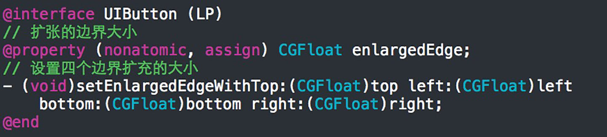
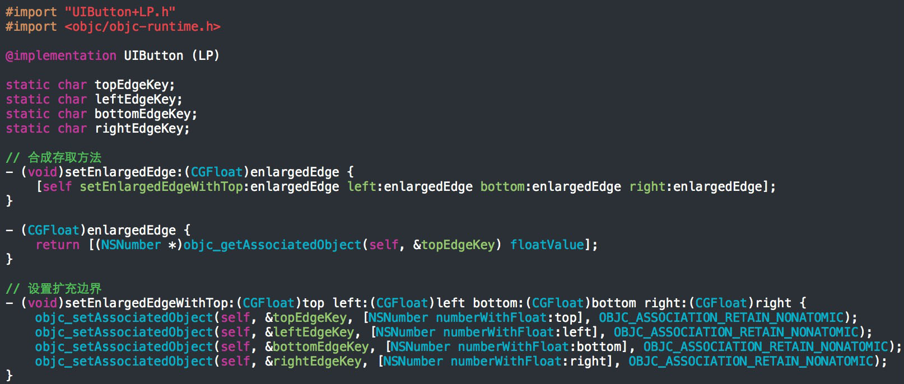
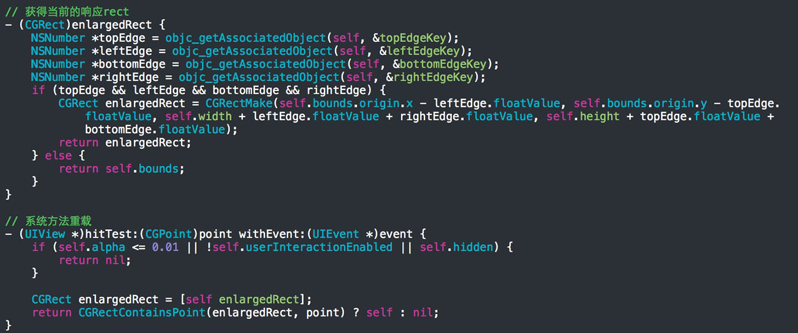

增加UIButton的响应区域
经常遇到UIButton对象"点了没反应"或"很难被点击到"的情况. 有时候是因为其frame的size设置的过小, 导致体验不好.
解决办法当然是扩大按钮的响应范围. 若仅仅是为一个简单的button自定义的扩张响应的"rect", 我的做法是写一个分类, 设置供外界存取的"边缘扩
张大小"属性以及合适的方法, 然后重写系统方法hitTest:withEvent:以拦截事件分发. 注意,
因为分类不会合成属性的存取方法(合成属性会生成实例变量, 然而ivar存储在只读段, 运行时不可改变), 须配合关联语法使用. 话不多说,
上代码:


